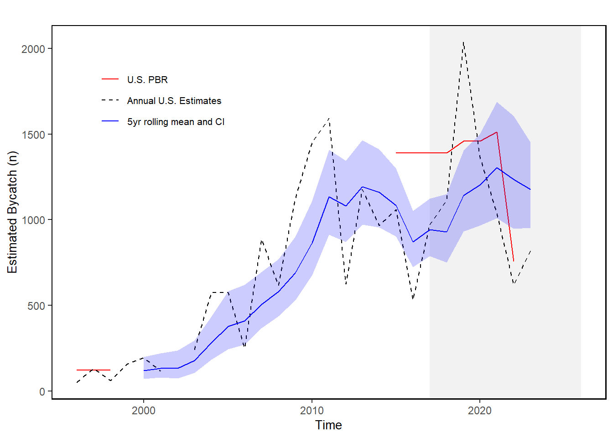

36 Gray Seal Bycatch
Last updated July 23, 2026
Description: The data presented here are time series of the species specific estimates of bycatch from U.S. North Atlantic commercial fisheries.
Contributor(s): Kristin Precoda, Kimberly Murray
Affiliations: NEFSC
Indicator Family:
Indicator Category:
Synthesis Theme:
36.1 Introduction to Indicator
Gray seals, like all marine mammals, are protected under the Marine Mammal Protection Act (MMPA). The goal of the MMPA is to obtain and maintain optimum sustainable populations (OSP) of marine mammals, because they were recognized as significant functioning elements of marine ecosystems. To help prevent populations from falling below their OSP levels, managers set limits on the level of incidental mortality and serious injury occurring in commercial fisheries, and also monitor unusual mortality events (UMEs). We report on levels of gray seal incidental mortality in commercial fisheries over time relative to the limits set on this mortality, otherwise known as the Potential Biological Removal (PBR) level. Gray seals use both U.S. and Canadian waters and their abundance and PBR on a range-wide basis should take into account portions of the population that are in U.S. as well as Canadian waters.
36.2 Key Results and Visualizations
For gray seals in U.S. waters, the total estimated annual bycatch and 5-year rolling mean with 95% confidence intervals from U.S. North Atlantic commercial fisheries is shown by year. Gear types include bottom gillnets, bottom trawls, midwater trawls, and pair trawls. The Potential Biological Removal (PBR) for the U.S. portion of the stock is indicated by the red reference line. The 5-year mean estimates of bycatch increased from 2000 to around 2012 and has showed inter-annual variability since. The U.S. PBR decreased in the draft 2024 SAR from 1512 to 756 in recognition of the unknowns in the stock structure, abundance, and rate of exchange between U.S. and Canadian waters. The annual and 5-year mean estimates are above the new U.S. PBR but far below the range-wide draft PBR of 12,052.
Mid-Atlantic

36.3 Implications
Under the MMPA, if bycatch exceeds PBR levels, Take Reduction Teams may be convened to develop plans to reduce incidental mortality and serious injury from commercial fishing to less than the PBR level. While gray seal bycatch in U.S. waters exceeds the PBR level for the U.S. portion of the stock, it does not exceed the range-wide PBR. If complete range-wide information were available, human-caused mortality and serious injury would be unlikely to exceed the range-wide PBR for this stock. Thus, this stock is not considered strategic.
36.4 Indicator statistics
Spatial scale: Spatial scale: U.S. waters from North Carolina to Canada from the U.S. coastline to the U.S. exclusive economic zone 200 nautical miles offshore, thus including all EPUs, the full shelf and beyond.
Temporal scale: Annual from 1990 to present
Variable definitions
36.5 Get the data
Point of contact: Debra Palka (debra.palka@noaa.gov)
ecodata dataset: ecodata::grayseal
Tech Doc link: https://noaa-edab.github.io/tech-doc/grayseal.html